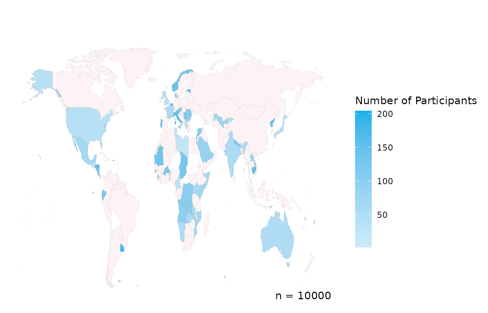
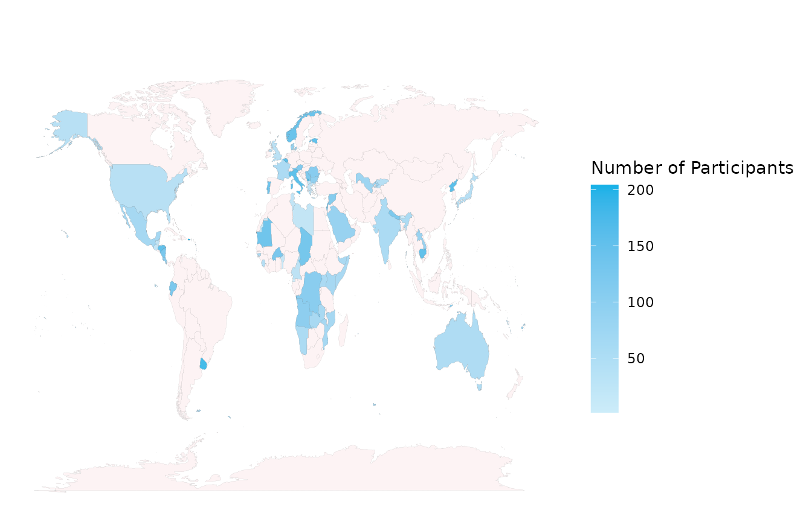
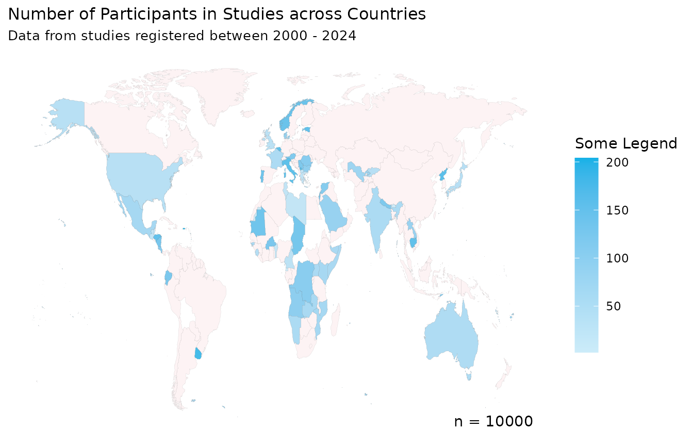
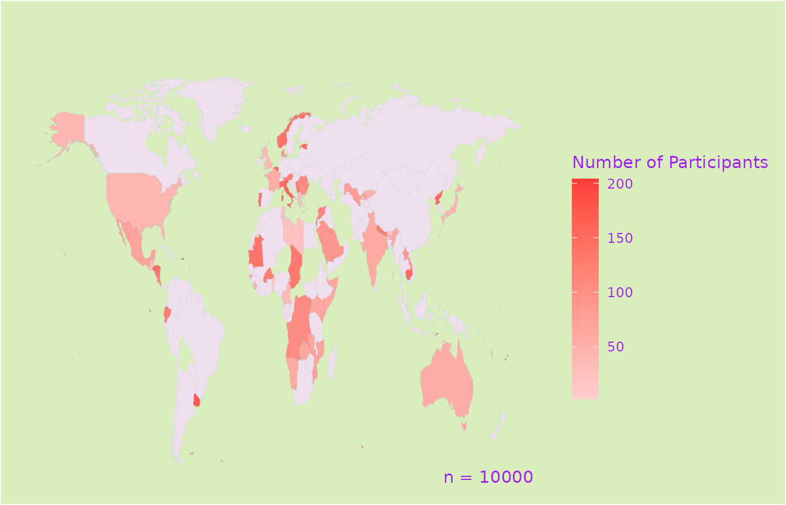
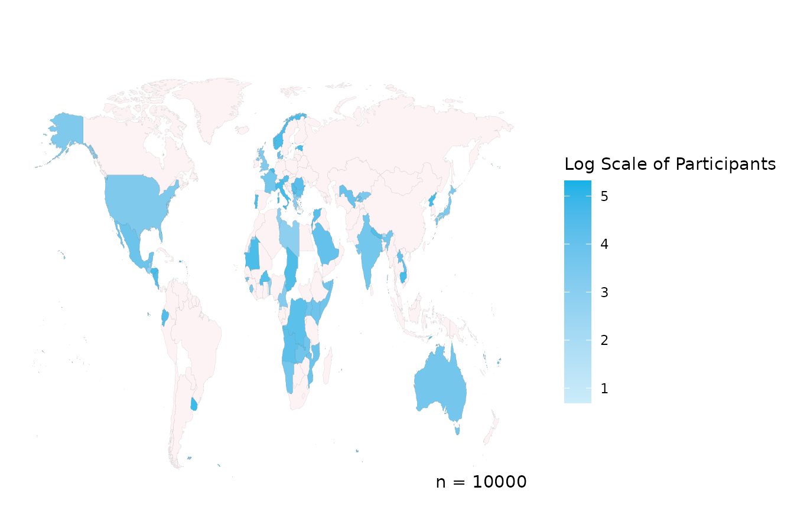

worlddatr
worlddatr.Rmdworlddatr makes creating choropleth maps easier and
quicker so you can spend more time of your research instead of data
cleaning. Often, you will want to analyse global trends in data, include
metrics such as income level of the country and plot all of this
information on a map of the world. However, these various data sources
use different variables, country names and codes, consequently, the data
is time-consuming and burdensome to use, especially if you are new to
programming langauages such as R. For instance:
- Various spellings of a country/territory (i.e. North Korea, N.Korea, Democratic People’s Republic of Korea)
- English or native translations, non-ASCII Characters (i.e. Spain, España)
- Different definitions or groupings of countries/territory (i.e. Channel Islands grouped together, or Jersey, Guernsey etc. listed separately)
Typically, each researcher wanting to plot the globe would need to go
through this data cleaning process, we’ve done this so you don’t have to
and packaged it into an R package, worlddatr. Key features
include:
- Pre-processed Datasets: Access to pre-cleaned datasets that are ready to merge with your data, reducing the time spent on data preparation.
- One-command Utilty: Functions that allow you to produce maps with a single command, while still providing control over customisation options such as colours, titles, and legends.
- Open Source and Community-driven: Being open-source, worlddatr invites users to build upon its code, tailor visualisations to their specific needs, and contribute improvements back to IDDO, enhancing the tool for the entire research community.
Installing worlddatr
You can install the worlddatr package from GitHub,
there you can find the code required.
Datasets
There are two datasets in the package, world_income,
which has a row per country/territory and provides the country ISO
codes, name and income group. This has 250 rows and 7 columns.
alpha_3_code, alpha_2_code and
numeric refer to the ISO standardised country codes,
country and economy list the names of the
country from ISO and World Bank datasets respectively, while
income_group provides the income infomation for each
entity. redcap_number is also included as a classification
number for IDDO REDCap databases, which is an alphabetical, English list
of countries, note this is not standardised so check that you data
matches this list before using the redcap_number.
head(world_income)
#> # A tibble: 6 × 7
#> alpha_3_code alpha_2_code numeric country economy income_group redcap_number
#> <chr> <chr> <dbl> <chr> <chr> <fct> <dbl>
#> 1 AFG AF 4 Afghanis… Afghan… Low income 1
#> 2 ALB AL 8 Albania Albania Upper middl… 3
#> 3 DZA DZ 12 Algeria Algeria Upper middl… 4
#> 4 ASM AS 16 American… Americ… High income 5
#> 5 AND AD 20 Andorra Andorra High income 6
#> 6 AGO AO 24 Angola Angola Lower middl… 7The second dataset merges the previous world_income with
the ggplot2 map_data() function, with cleaning
steps applied to the latter, resulting in a 99,338 row, 13 column
dataset which, in addition, contains the longitude and latitude of the
borders of the countries and territories which we desire to plot.
region, subregion, group and
order are used to identify the country borders.
head(world_map)
#> alpha_3_code alpha_2_code.x numeric long lat group order region
#> 1 ABW AW 533 -69.89912 12.45200 1 1 Aruba
#> 2 ABW AW 533 -69.89571 12.42300 1 2 Aruba
#> 3 ABW AW 533 -69.94219 12.43853 1 3 Aruba
#> 4 ABW AW 533 -70.00415 12.50049 1 4 Aruba
#> 5 ABW AW 533 -70.06612 12.54697 1 5 Aruba
#> 6 ABW AW 533 -70.05088 12.59707 1 6 Aruba
#> subregion country.x economy income_group redcap_number country.y
#> 1 <NA> Aruba Aruba High income 13 Aruba
#> 2 <NA> Aruba Aruba High income 13 Aruba
#> 3 <NA> Aruba Aruba High income 13 Aruba
#> 4 <NA> Aruba Aruba High income 13 Aruba
#> 5 <NA> Aruba Aruba High income 13 Aruba
#> 6 <NA> Aruba Aruba High income 13 Aruba
#> alpha_2_code.y centroid_long centroid_lat
#> 1 AW -69.97564 12.51563
#> 2 AW -69.97564 12.51563
#> 3 AW -69.97564 12.51563
#> 4 AW -69.97564 12.51563
#> 5 AW -69.97564 12.51563
#> 6 AW -69.97564 12.51563These datasets are also stored as csv files in the GitHub for use.
Functions
As well as the data, we introduce some functions which can assist
making the maps, so that regular users and beginners alike can utilise
this tool. We’ll show create_participant_map() which allows
the user to make a choropleth for the number of participants per country
in a dataset, there is also create_studies_map() which is
very similar but the default legend refers to studies as opposed to
particiapnts, the rest of the parameters work the same way.
Your dataset will need to include what country the participant or
study (or other entity) is from, in the 3 digit ISO code format. The
function will group the data by the country and then summarise the data
in a ggplot using the geom_polygon() function.
If your data does not have the 3 digit ISO code,
left_join() your dataset with world_income
with the key being the country code or name you do have, then you’ll
have the alpha_3_code in your data and use this as the
country_col below.
Using the Functions
Now we can take our data, country_data, indicate the
name of the column where the three digit ISO country code exists
(country_col) and run the command.
create_participant_map(data = country_data,
country_col = "COUNTRY")
This visualises the example data, along with legend and the total number, n, of participants. Although, perhaps you do not want n to be displayed and you’ll note that Antarctica is not present, using extra parameters we can change that.
create_participant_map(data = country_data,
country_col = "COUNTRY",
include_n = FALSE,
include_ATA = TRUE)
The title and subtitle can be added to the plot to provide more information about your graphic, and the legend title can be changed, or removed by leaving the option blank.
create_participant_map(data = country_data,
country_col = "COUNTRY",
title = "Number of Participants in Studies across Countries",
subtitle = "Data from studies registered between 2000 - 2024",
legend = "Some Legend")
Blue not your colour? No problem, customise the colour of the countries, borders, text and background easily.
create_participant_map(data = country_data,
country_col = "COUNTRY",
colour_high = "#FF3C38",
colour_low = "#FFCFCF",
colour_default = "#F0DFEE",
colour_borders = "#20A39E",
colour_background = "#DAEDBD",
colour_text = "purple")
You can change the scale breaks on the legend using
scale_breaks and log transform the scale using
log_scale.
create_participant_map(data = country_data,
country_col = "COUNTRY",
scale_breaks = c(10, 50, 100, 180, 200))
create_participant_map(data = country_data,
country_col = "COUNTRY",
log_scale = TRUE,
legend = "Log Scale of Participants")
This does not intend to be the only solution and we encourage you to use the code in the GitHub to develop graphs more specific to your needs, this hopes to provide some inspiration, without spending hours to see if it works. If you have suggestions, issues or want to contribute to the package contact us or see more on the GitHub page.